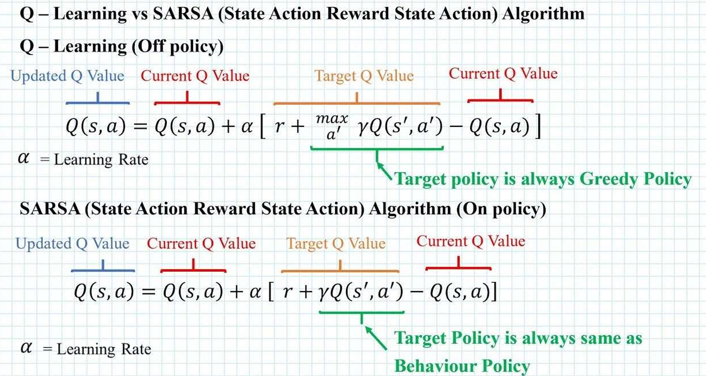
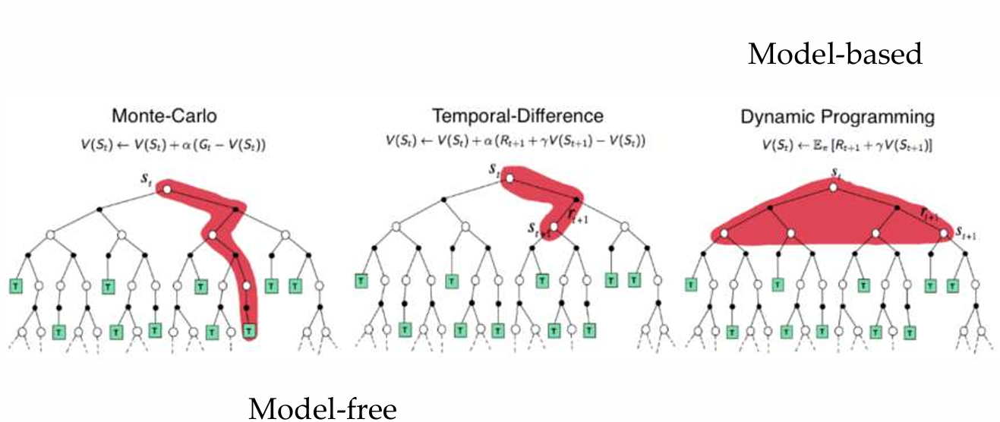

Linear Regression
MSE
令其为 \(0\)
系数绝对值太大说明过拟合
Statistic Model
\(y=f(x,\omega) + \epsilon\)
\(\epsilon\) 是噪音, 一般是 \(\epsilon \sim \mathcal N(0, \sigma^2)\)
用 \(\epsilon\) 来建模 \(y\)
\(p(y|x, \omega, \sigma)=\frac{1}{\sigma\sqrt{2\pi}}e^{-\frac{(y-f(x,\omega))^2}{2\sigma^2}}\)
MLE
连乘看着不好, 取对数得到 log-likelihood
对于正态分布的 \(p\) 取 \(\log\) 得到 MSE 的形式:
Regularization
Ridge Regression
\(XX^\top+\lambda I\) 一定可逆
Lasso
\(p=1\) 是为 LASSO (Least Absolute Selection and Shrinkage Operator)
Expected Prediction Error and Bias-Variance Decomposition
注意到 \((y-f(x))^2=((y-\mathbb E[y\mid x])+(\mathbb E[y\mid x]-f(x)))^2\)
再把 \(f(x)\) 换成实际的 \(f(x;\mathcal D)\) \(\(\text{EPE}=(\text{Bias})^2+\text{Variance}+\text{Noise}\)\)
Classification
sigmoid
logistic regression
MLE
\(E(a)=\sum_i\log(1+e^{-y_ia^\top x_i})\) 是凸函数
Gradient Descent
归纳偏置
SVM
\(\gamma\) 非负, \(y=\pm 1\)
最小距离最大化, 为了让误分类的可能性最小
Kernel
Representer Theorem
Mercer's Theorem
如果核函数矩阵是半正定的, 那么其可以作为核函数使用
Ridge Regression
1. 动机与直觉：为什么要搞对偶？
岭回归 (Ridge Regression) 的原问题（Primal Problem）是一个无约束优化问题： $$ \min_w J(w) = \frac{1}{2} \sum_{i=1}^N (y_i - w^T x_i)^2 + \frac{\lambda}{2} ||w||^2 $$
直接求解的痛点： 如果我们对 \(w\) 求导并令其为 0，得到的解是：\(w = (X^T X + \lambda I)^{-1} X^T y\)。 这里涉及一个矩阵求逆 \((X^T X + \lambda I)\)。 * 如果特征维度 \(D\) 很大（甚至无限大，如 RBF 核），\(X^T X\) 是 \(D \times D\) 的矩阵，根本算不动。 * 目标：我们希望把计算转化为 \(N \times N\) 的矩阵（只与样本数量有关），并且把点积 \(x_i^T x_j\) 替换为核函数 \(K(x_i, x_j)\)。
这就需要通过对偶形式来实现。
2. 构造约束优化问题
普通的岭回归没有约束，怎么用拉格朗日乘子法？ 技巧：引入辅助变量（误差变量） \(\xi\)。
我们将预测误差定义为 \(\xi_i = y_i - w^T x_i\)，那么原问题可以等价地写成一个带等式约束的优化问题：
对比 SVM： * SVM 的约束是 \(y_i(w^Tx_i+b) \ge 1\)（不等式约束），所以 KKT 导致了稀疏解（有些 \(\alpha=0\)）。 * Ridge 的约束是 \(y_i - w^Tx_i = \xi_i\)（等式约束），这意味着所有样本都参与计算，解是稠密的。
3. 构造拉格朗日函数
引入拉格朗日乘子 \(\alpha_i\)（注意：因为是等式约束，\(\alpha_i\) 没有非负限制，可以是任意实数）。
写成向量形式更简洁： $$ L(w, \xi, \alpha) = \frac{1}{2} \xi^T \xi + \frac{\lambda}{2} w^T w + \alpha^T (y - Xw - \xi) $$
4. KKT 条件推导
我们要解决的是极小极大问题：\(\max_\alpha \min_{w, \xi} L(w, \xi, \alpha)\)。 根据 KKT 条件中的平稳性 (Stationarity)，我们在极值点对原始变量 \(w\) 和 \(\xi\) 的偏导必须为 0。
A. 对 \(w\) 求偏导（表示定理的由来）
深度解读：这一步推导出了著名的 表示定理 (Representer Theorem)。它告诉我们，最优的权重向量 \(w\) 其实就是所有训练样本 \(x_i\) 的线性组合。这使得我们可以用核函数替换 \(w^T x\)。
B. 对 \(\xi\) 求偏导
直觉：这步非常有意思。在岭回归的对偶形式里，拉格朗日乘子 \(\alpha\) 本质上就是缩放后的预测误差。
5. 导出对偶问题并求解
现在，我们将求出的 \(w\) 和 \(\xi\) 代回拉格朗日函数 \(L\) 中，消去原始变量。
我们要最大化这个对偶函数（相对于 \(\alpha\)）。为了方便，转为最小化它的相反数：
求解最优 \(\alpha\)
这是一个关于 \(\alpha\) 的二次函数，直接求导令其为 0： $$ (I + \frac{1}{\lambda} X X^T) \alpha - y = 0 $$ $$ (I + \frac{1}{\lambda} G) \alpha = y \quad (\text{其中 } G = XX^T \text{ 是 Gram 矩阵}) $$ $$ \alpha = (I + \frac{1}{\lambda} G)^{-1} y $$ 为了公式美观，通常我们会做一个变量代换（或者在最开始定义拉格朗日项时乘以系数）。让我们直接整理成最终预测公式。
6. 引入核函数 (Kernel Method)
现在，我们把所有的内积 \(x_i^T x_j\) 替换为核函数 \(K(x_i, x_j)\)。 矩阵 \(G\) 变为核矩阵 \(\mathbf{K}\)。
我们得到 Dual Variable \(\alpha\) 的解： $$ \alpha = (\mathbf{K} + \lambda I)^{-1} \lambda y $$ (注：这里 \(\alpha\) 的具体系数取决于 \(\lambda\) 放在 \(L\) 的哪一边，但核心结构是 \((K+\lambda I)^{-1}y\))。
最终预测公式
对于一个新样本 \(x_{new}\)，我们要预测 \(f(x_{new}) = w^T x_{new}\)。 代入 \(w = \frac{1}{\lambda} \sum \alpha_i x_i\)：
如果我们把求解出来的 \(\alpha\) 代入并整理常数，Kernel Ridge Regression 的标准预测公式为： $$ \mathbf{f(x_{new}) = y^T (K + \lambda I)^{-1} \kappa(x_{new})} $$ 其中 \(\kappa(x_{new})\) 是一个列向量，包含新样本与所有训练样本的核函数值 \([K(x_1, x_{new}), ..., K(x_N, x_{new})]^T\)。
7. 总结：SVM vs Kernel Ridge
通过推导，我们可以清晰地看到两者的 KKT 条件差异带来的影响：
| 特性 | SVM (对偶) | Kernel Ridge (对偶) |
|---|---|---|
| 原约束 | 不等式 \(1 - y(wx+b) \le 0\) | 等式 \(y - wx - \xi = 0\) |
| 乘子限制 | \(\alpha_i \ge 0\) | \(\alpha_i \in \mathbb{R}\) (无限制) |
| 互补松弛 | \(\alpha_i g_i(x) = 0\) | 无 (总是满足) |
| 稀疏性 | 稀疏 (只在边界上的点 \(\alpha \neq 0\)) | 稠密 (所有点的 \(\alpha \neq 0\)) |
| 求解难度 | 二次规划 (QP)，需迭代求解 | 线性方程组，也就是矩阵求逆 |
| 对异常值 | 较鲁棒 (Hinge Loss 线性) | 敏感 (平方误差 L2) |
一句话总结： 对 Ridge Regression 使用拉格朗日乘子法，实际上是将“求 \(w\) 的逆矩阵问题”转化为了“求 \(\alpha\) 的逆矩阵问题”，并通过表示定理将线性权重转化为样本权重的线性组合，从而完美引入了 Kernel Trick。
SVM
1. 动机直觉：为什么要使用对偶形式？
SVM 的原问题 (Primal Problem) 是直观的几何理解：找一个超平面 \((w, b)\)，把正负样本隔得越远越好。 目标是最小化 \(w\) 的范数 \(\frac{1}{2}||w||^2\)，约束是所有点都要被正确分类且在间隔外。
既然原问题这么清晰，为什么还要转化为对偶问题 (Dual Problem)？主要有两个核心动机：
A. 引入核函数 (Kernel Trick)
这是最重要的原因。 * 原问题依赖于 \(w\)，它是特征空间维度的向量。如果我们将数据映射到无限维空间（为了线性可分），\(w\) 也就变成了无限维，根本没法算。 * 对偶问题将计算转化为了样本之间的内积 \(\langle x_i, x_j \rangle\)。我们不需要知道无限维的 \(x\) 长什么样，只需要知道它们内积的结果（核函数）。这使得高维映射成为可能。
B. 稀疏性 (Sparsity) 与支持向量
- 在对偶形式中，我们求解的变量变成了 \(\alpha\)（每个样本对应的权重）。
- 通过 KKT 条件（互补松弛性），我们会发现绝大多数样本的 \(\alpha_i = 0\)。只有少数在边界上的点（支持向量）的 \(\alpha_i > 0\)。
- 这告诉我们：决定分类边界的，只有那几个关键的支持向量，其他数据点其实是“废”的。 这种深刻的物理意义在原问题中很难看出来。
2. 为什么使用 Lagrange 乘子法？
在数学上，当我们想求一个函数 \(f(x)\) 的极值，但 \(x\) 受到某些条件限制（比如 \(g(x) \le 0\)）时，我们不能直接求导等于 0。
Lagrange 乘子法的作用： 它通过引入一个新的变量（\(\lambda\) 或 \(\alpha\)），将“带约束的优化问题”转化为了“无约束的优化问题”。
直观理解（力学类比）： 想象一个小球在碗里滚（寻找最小值），由于重力它会滚到碗底。 现在的约束是：加了一堵墙，小球不能越过这堵墙。 * 如果碗底在墙内，墙没用（约束无效）。 * 如果碗底在墙外，小球会停在墙边。此时，小球受到两个力平衡：重力（原目标的梯度） 和 墙的支持力（约束的梯度）。 * Lagrange 乘子 \(\alpha\) 其实就是这个“墙的支持力”的大小。
3. KKT 条件是什么？它与不等式 Lagrange 的关系
KKT (Karush-Kuhn-Tucker) 条件是 Lagrange 乘子法在不等式约束下的推广。对于凸优化问题，KKT 是最优解的充要条件。
为什么不等式约束需要 KKT？
对于等式约束 \(h(x)=0\)，拉格朗日乘子 \(\lambda\) 可以是正也可以是负（墙可以在左边挡你，也可以在右边挡你）。 但对于不等式约束 \(g(x) \le 0\)，我们通常限制乘子 \(\alpha \ge 0\)。因为墙只能把小球往一个方向推（即推回可行域内），而不能把小球吸过去。
KKT 条件的四大金刚
假设我们要解决：\(\min f(x)\)，约束 \(g_i(x) \le 0\)。 构造拉格朗日函数：\(L(x, \alpha) = f(x) + \sum \alpha_i g_i(x)\)。
最优解 \(x^*\) 和 \(\alpha^*\) 必须满足：
- 平稳性 (Stationarity)：\(\nabla_x L(x^*, \alpha^*) = 0\)
- 力学平衡：原函数的梯度和约束梯度的线性组合为 0。
- 原始可行性 (Primal Feasibility)：\(g_i(x^*) \le 0\)
- 解必须满足原来的约束条件。
- 对偶可行性 (Dual Feasibility)：\(\alpha_i \ge 0\)
- 拉格朗日乘子必须非负（墙的支持力只能向内）。
- 互补松弛性 (Complementary Slackness)：\(\alpha_i g_i(x^*) = 0\) (最关键的一条！)
- 这个公式包含了两个逻辑：
- 要么 \(\alpha_i = 0\)：表示约束没起作用（点在可行域内部），不需要“墙的支持力”。
- 要么 \(g_i(x^*) = 0\)：表示约束起作用了（点正好在边界上），此时 \(\alpha_i > 0\)。
- 对应 SVM：这就是为什么只有支持向量（在边界上的点）的 \(\alpha > 0\)，而非支持向量的 \(\alpha = 0\)。
- 这个公式包含了两个逻辑：
4. 理论推导：从原问题到对偶形式
Step 1: SVM 原问题
目标是最大化间隔，等价于最小化 \(w\) 的模长。 $$ \begin{aligned} \min_{w, b} \quad & \frac{1}{2} ||w||^2 \ \text{s.t.} \quad & y_i (w^T x_i + b) \ge 1, \quad i=1,\dots,N \end{aligned} $$ 为了配合标准形式（\(g(x) \le 0\)），我们将约束改写为：\(1 - y_i (w^T x_i + b) \le 0\)。
Step 2: 构造拉格朗日函数
引入拉格朗日乘子 \(\alpha_i \ge 0\)： $$ L(w, b, \alpha) = \frac{1}{2}||w||^2 + \sum_{i=1}^N \alpha_i [1 - y_i(w^T x_i + b)] $$ 注意：这里加号后面是约束项。如果约束是 \(\ge 0\)，则通常用减号。本质一样，都是为了让这一项非正。
整理一下： $$ L(w, b, \alpha) = \frac{1}{2}||w||^2 - \sum_{i=1}^N \alpha_i y_i (w^T x_i + b) + \sum_{i=1}^N \alpha_i $$
Step 3: 极小极大问题 (Min-Max)
根据对偶理论，原问题等价于： $$ \min_{w, b} \max_{\alpha \ge 0} L(w, b, \alpha) $$ 解释：如果某个约束被违反了（即 \(1 - y(\dots) > 0\)），那么 \(\max_{\alpha} L\) 会让 \(\alpha\) 趋向无穷大，导致函数值为无穷大。只有满足约束，最大值才是 \(\frac{1}{2}||w||^2\)。所以最小化这个 Max 函数就等于在满足约束的前提下最小化目标。
Step 4: 转化为对偶问题 (Dual Problem)
强对偶性允许我们交换 min 和 max 的顺序（因为是凸二次规划问题，满足 Slater 条件）： $$ \max_{\alpha \ge 0} \min_{w, b} L(w, b, \alpha) $$
现在我们先解内部的 \(\min_{w, b} L(w, b, \alpha)\)。 对 \(w\) 和 \(b\) 求偏导并令其为 0：
-
对 \(w\) 求导： $$ \nabla_w L = w - \sum_{i=1}^N \alpha_i y_i x_i = 0 \implies \mathbf{w = \sum_{i=1}^N \alpha_i y_i x_i} $$ 物理意义：权重向量 \(w\) 是数据向量 \(x_i\) 的线性组合。
-
对 \(b\) 求导： $$ \nabla_b L = - \sum_{i=1}^N \alpha_i y_i = 0 \implies \mathbf{\sum_{i=1}^N \alpha_i y_i = 0} $$
Step 5: 代回并得到最终对偶形式
将上面求出的 \(w\) 代回 \(L(w, b, \alpha)\) 中：
最终的 SVM 对偶问题： $$ \begin{aligned} \max_{\alpha} \quad & \sum_{i=1}^N \alpha_i - \frac{1}{2} \sum_{i=1}^N \sum_{j=1}^N \alpha_i \alpha_j y_i y_j (x_i^T x_j) \ \text{s.t.} \quad & \sum_{i=1}^N \alpha_i y_i = 0 \ & \alpha_i \ge 0, \quad i=1,\dots,N \end{aligned} $$
总结
- 动机：对偶形式让我们可以把 \(x_i^T x_j\) 替换成核函数 \(K(x_i, x_j)\)，从而处理非线性分类，且计算复杂度只与样本量有关，与维度无关。
- Lagrange：把约束放进目标函数里，形成 \(L\)。
- KKT：其中的互补松弛条件 \(\alpha_i (1 - y_i(w^Tx_i+b)) = 0\) 揭示了 SVM 的稀疏性——只有即使得约束等号成立的点（支持向量），其 \(\alpha_i\) 才不为 0。
你的观察非常精准！这确实是很多人在学习 SVM 时会忽略的一个微妙之处。
结论先行： 是的，在推导对偶问题的数学形式（即写出 \(\max_\alpha \dots\) 这个公式）的过程中，我们只用到了“稳定性（Stationarity）”和“对偶可行性（Dual Feasibility, \(\alpha \ge 0\)）”。
但是，“原始可行性”和“互补松弛性”并没有消失，它们隐藏在“强对偶性”的理论保障背后。如果不满足这两条，解出来的 \(\alpha^*\) 确实无法对应原问题的最优解 \(w^*\)。
下面我为你拆解这里的逻辑陷阱。
1. 为什么推导对偶形式时“看似”不需要那两条？
让我们回顾一下从 Lagrange 函数 \(L(w,b,\alpha)\) 变成对偶函数 \(g(\alpha)\) 的过程：
为了求这个 \(\min\)，我们做了什么？ 1. 求导等于 0：\(\nabla_w L = 0, \nabla_b L = 0\)。这是 KKT 的稳定性。 2. 代回整理：得到了 \(-\frac{1}{2}\sum\sum\dots + \sum\alpha_i\)。
然后我们要求 \(\max g(\alpha)\)： 3. 加上约束：\(\alpha_i \ge 0\)。这是 KKT 的对偶可行性。
发现了吗？ 在这个代数变形的过程中，我们根本不需要知道 \(w\) 是否满足 \(1-y(wx+b) \le 0\)（原始可行性），也不需要知道 \(\alpha_i(1-y(wx+b))=0\)（互补松弛性）。 我们只是在做一个数学上的 Lower Bound（下界）估计。无论那两条是否满足，\(g(\alpha)\) 永远是原问题的一个下界。
2. 如果不加上那两条，解出来的 \(\alpha^*\) 会怎样？
这是核心所在。
假设我们只解出了对偶问题的最优解 \(\alpha^*\)（这一步完全没问题，毕竟对偶问题本身就是一个定义良好的二次规划 QP 问题）。 然后，我们通过稳定性公式算出 \(w^* = \sum \alpha_i^* y_i x_i\)。
如果没有“原始可行性”和“互补松弛性”的约束（即没有强对偶性保障），会发生以下灾难：
灾难一：Duality Gap > 0（算出的解毫无意义）
对偶问题的最大值 \(d^*\) 会严格小于原问题的最小值 \(p^*\)。 这意味着，你算出的 \(\alpha^*\) 虽然让对偶函数最大了，但通过它反算出来的 \(w^*\) 并不是原问题的最优解。这个 \(w^*\) 可能根本就没有把数据分开，或者间隔不是最大的。
灾难二：违背原始约束
你算出的 \(w^*\) 很可能根本不满足 \(y_i(w^{*T}x_i+b) \ge 1\)。 因为在推导对偶函数 \(g(\alpha) = \min_{w,b} L\) 时，我们只是在一个无约束的 \(w, b\) 空间里找极值。如果没有强对偶性把 \(w\) “拉回”可行域，这个 \(\min\) 可能会跑到可行域外面去。
3. 那两条条件到底去哪了？
它们其实是强对偶性（Strong Duality）的化身。
当我们理直气壮地说：“解完对偶问题（Dual），得到的解就等于原问题（Primal）的解”时，我们其实默默引用了 Slater 条件（因为 SVM 问题是凸的且有可行解）。
强对偶性成立 \(p^* = d^*\)，而在数学上，这等价于最优解 \((w^*, b^*, \alpha^*)\) 必须满足所有 KKT 条件。
让我们看看互补松弛性是怎么把 Primal 和 Dual 锁死的：
- 对偶问题的目标是 \(d^* = \min_{w,b} L(w,b,\alpha^*)\)。
- 原问题的目标是 \(p^* = \frac{1}{2}||w^*||^2\)。
如果 \(d^* = p^*\)（强对偶），那么上式中的求和项必须为 0！ 即： $$ \sum \alpha_i^ (1 - y_i(w^{T}x_i+b^)) = 0 $$ 由于 \(\alpha \ge 0\) 且约束 \(\le 0\)，每一项都非正。要让和为 0，每一项都必须是 0。 这就是 互补松弛性*。
总结
- 推导过程：确实只用了“稳定性”和“对偶可行性”来构造对偶问题的目标函数形式。这一步是纯代数变换。
- 解的对应关系：“原始可行性”和“互补松弛性”是桥梁。
- 如果你解出了 \(\alpha^*\)，想宣称它对应的 \(w^*\) 就是原问题的最优解，你必须依赖强对偶性。
- 而强对偶性强制要求那两条“消失”的 KKT 条件在终点处必须成立。
- 回答你的假设：如果没有那两条（即没有强对偶性），你解出的 \(\alpha^*\) 只是对偶问题的最优解，它对应的 \(w^*\) 不是 原问题的最优解，甚至可能不满足原问题的约束。
所以，SVM 的推导逻辑是： 构造对偶形式（用前两条 KKT） \(\to\) 证明强对偶性 \(\to\) 只有在强对偶性成立时，剩余的两条 KKT 条件才自动生效，保证了 \(\alpha^*\) 和 \(w^*\) 的一一对应。
这是一个非常深刻的理论问题。你其实触碰到了优化理论中对偶性（Duality）定义的本质。
答案是：有的。除了通常说的“Min-Max 交换（Lagrange Duality）”视角外，最著名的替代方法是“Wolfe Duality（沃尔夫对偶）”。
事实上，在很多早期的非线性规划教材中，推导 SVM 对偶问题时使用的正是 Wolfe Duality，而不是现在流行的 Min-Max 交换视角。虽然结果一样，但它们的思维路径和对 KKT 的使用方式完全不同。
我将为你详细讲解 Wolfe Duality，以及它如何通过 KKT 条件直接构造对偶问题。
方法二：Wolfe Duality (沃尔夫对偶)
核心区别： * Min-Max (Lagrange Duality)：基于博弈论/鞍点视角。先定义 \(g(\alpha) = \min_w L\)，然后求 \(\max g(\alpha)\)。它的逻辑基础是 \(\min \max \ge \max \min\)（弱对偶）以及 Slater 条件（强对偶）。 * Wolfe Duality：基于梯度/平稳性视角。它直接把 KKT 条件中的“梯度为0” 作为一个约束条件写进了对偶问题里。
1. Wolfe Duality 的定义
对于原问题（Primal）： $$ \min_x f(x) \quad \text{s.t.} \quad g_i(x) \le 0 $$
其 Wolfe Dual 问题定义为：
注意这里的神奇之处： 1. 变量：Wolfe 对偶问题的变量同时包含原变量 \(x\) 和对偶变量 \(\alpha\)。 2. 目标：直接最大化拉格朗日函数 \(L\)。 3. 约束：显式地加上了 \(\nabla_x L = 0\)。
2. 在 SVM 中的推导 (Wolfe 路径)
让我们看看用 Wolfe Duality 推导 SVM 有多顺滑：
Step 1: 写出 Lagrangian $$ L(w, b, \alpha) = \frac{1}{2}||w||^2 + \sum \alpha_i (1 - y_i(w^Tx_i+b)) $$
Step 2: 构造 Wolfe Dual 问题 我们要最大化 \(L(w,b,\alpha)\)，受限于梯度为 0： $$ \begin{aligned} \max_{w, b, \alpha} \quad & L(w, b, \alpha) \ \text{s.t.} \quad & \nabla_w L = w - \sum \alpha_i y_i x_i = 0 \ & \nabla_b L = -\sum \alpha_i y_i = 0 \ & \alpha_i \ge 0 \end{aligned} $$
Step 3: 简化 (代入消除) 既然约束里强制要求 \(\nabla_w L = 0\) 和 \(\nabla_b L = 0\)，我们可以利用这两个等式把 \(L\) 里的 \(w\) 和 \(b\) 消除掉（这和 Min-Max 方法中的“求解内部最小值”数学操作一模一样，但逻辑不同：这里是利用约束代入）。
代入后，目标函数 \(L\) 变成了只含 \(\alpha\) 的式子： $$ \sum \alpha_i - \frac{1}{2} \sum \sum \alpha_i \alpha_j y_i y_j x_i^T x_j $$
约束剩下： $$ \sum \alpha_i y_i = 0, \quad \alpha_i \ge 0 $$
结果：得到了和 Min-Max 完全一样的对偶问题形式。
3. 为什么 Wolfe Duality 能保证最优解等价？
这里利用 KKT 的逻辑非常直接：
- 弱对偶性：对于任意满足 Wolfe 约束（即满足梯度为0）的 \((x, \alpha)\)，都有 \(L(x, \alpha) \le f(x^*)\)（假设 \(f\) 是凸的）。
- 强对偶性：如果原问题是凸的且满足 Slater 条件，那么一定存在 \((x^*, \alpha^*)\) 满足 KKT 条件。
- 既然满足 KKT，那么它们一定满足 Wolfe Dual 的约束（因为 Wolfe 把 KKT 的一部分作为了约束）。
- 又因为在 KKT 点处，互补松弛性成立（\(\alpha g = 0\)），所以 \(L(x^*, \alpha^*) = f(x^*) + 0 = f(x^*)\)。
- 这意味着 Wolfe Dual 的最大值能够取到原问题的最小值。
方法三：Fenchel Duality (共轭函数法)
这是更现代、更纯粹的凸分析视角。它不需要显式地构造 Lagrangian，也不强调 KKT，而是利用共轭函数（Conjugate Function）。
原问题看作：\(\min_w f(w) + g(Aw)\) 其中 \(f(w) = \frac{1}{2}||w||^2\)， \(g(u)\) 是指示函数（或 Hinge Loss）。
利用 Fenchel 对偶定理： $$ \min_w f(w) + g(Aw) = \max_\alpha -f^(A^T \alpha) - g^(-\alpha) $$
- \(f^*\) 是 \(\frac{1}{2}||w||^2\) 的共轭函数，算出来是 \(\frac{1}{2}||\alpha||^2\)。
- \(g^*\) 是约束项的共轭函数。
通过这种“勒让德变换（Legendre Transform）”式的操作，也能直接推导出 SVM 的对偶形式。这种方法在推导 Soft Margin SVM 或者其他正则化模型（如 ElasticNet）时比 Lagrange 方法更强大、更简洁。
总结：三种视角的对比
你问的是“除了 Min-Max 还有没有别的方法”，以及“KKT 如何起作用”。
| 视角 | 核心逻辑 | KKT 的角色 | 适用场景 |
|---|---|---|---|
| Lagrange Dual (Min-Max) | 博弈论：寻找鞍点。定义 \(g(\alpha)\) 为下界函数，最大化下界。 | KKT 是强对偶性成立后的结果（充要条件）。 | 现在的教科书主流，逻辑链最完整。 |
| Wolfe Duality | 方程组：最大化 Lagrangian，但强行限制在驻点（梯度为0）上搜索。 | KKT 的平稳性直接被用作对偶问题的约束。 | 早期非线性规划，直观理解“代入消元”。 |
| Fenchel Duality | 凸分析：利用函数的共轭性质（斜率与截距的变换）。 | KKT 隐含在共轭变换的等号条件中。 | 复杂正则化问题，深度学习优化理论。 |
直接回答你的问题： Wolfe Duality 就是你寻找的那个方法。它构造了 Lagrange 乘子，但它不讲“Min-Max 交换”，而是直接讲“把 KKT 的梯度条件作为约束，去优化 Lagrangian”。这在逻辑上更直接地利用了 KKT 条件来锁定原问题的最优解。
Deep Learning
perceptron
误分类的节点有 \(-y_i(\omega^\top x_i+b)>0\)
所以损失函数定义为 \(L(\omega,b)=-\sum_i y_i(\omega^\top x_i+b)\)
用梯度下降去更新:
\(\nabla_\omega L=-y_ix_i\)
\(\omega_{t+1}=\omega_t +y_ix_i\)
convergence theorem
activate function
sigmoid
导数可能小于 \(1\) 导致梯度消失
ReLU
导数为 \(0,1\), 避免梯度消失
Bayesian Learning
posterior
MLE
KNN
KNN
Metric Learning
学习一个好的 Metric, 让有效的特征在 KNN 中尽可能近
使用 \(\sum\rho\geq1\) 而不是 \(\sum\rho^2\geq 1\)
因为使用 \(\sum\rho^2\geq 1\), 整个问题转换成 Rayleigh quotient, 问题缩减到了一维不变子空间 (最大特征值)
所以降维太严重
AKNN
HNSW
skip list
linear dimension reduction
PCA
目标: 找出方差依次递减的, 不相关的维度, 只保留这些维度
-
\[var z = a^\top Sa\]
S -> metric?
-
why \(\|X-AA^\top X\|_F^2\)? why frobenius?
LDA
1. 和 bayesian learning 的联系?
LDA 有两种解释视角： 1. Fisher 视角：几何视角，寻找一个投影方向，最大化类间方差与类内方差之比（瑞利商）。 2. 贝叶斯视角：概率视角，假设数据服从高斯分布，通过比较后验概率进行分类。
我们要证明的是：在二分类问题中，当假设两类数据服从同方差的高斯分布时，贝叶斯最优决策边界的法向量，与 Fisher LDA 求得的投影方向 \(w\) 是重合的。
1. 贝叶斯视角的推导
假设两类数据 \(C_1, C_2\) 服从多元高斯分布，且协方差矩阵相同： * \(P(x|C_1) \sim N(\mu_1, \Sigma)\) * \(P(x|C_2) \sim N(\mu_2, \Sigma)\)
根据贝叶斯决策规则，我们比较对数后验概率比（Log-odds）： $$ \ln \frac{P(C_1|x)}{P(C_2|x)} > 0 \implies \text{Class 1} $$
利用贝叶斯公式 \(P(C_k|x) \propto P(x|C_k)P(C_k)\)，并在高斯分布公式中展开（忽略常数项）： $$ \ln \frac{P(x|C_1)}{P(x|C_2)} + \ln \frac{P(C_1)}{P(C_2)} $$ $$ = \left[ -\frac{1}{2}(x-\mu_1)^T \Sigma^{-1} (x-\mu_1) \right] - \left[ -\frac{1}{2}(x-\mu_2)^T \Sigma^{-1} (x-\mu_2) \right] + \text{const} $$
展开平方项 \(x^T \Sigma^{-1} x\)，你会发现该项在两类中是一样的（因为 \(\Sigma\) 相同），所以可以消去。剩下的就是关于 \(x\) 的线性项： $$ = x^T \Sigma^{-1} \mu_1 - x^T \Sigma^{-1} \mu_2 + \text{bias terms} $$ $$ = x^T \underbrace{\Sigma^{-1} (\mu_1 - \mu_2)}{w + b $$}
结论：贝叶斯决策边界是一个超平面 \(w_{Bayes}^T x + b = 0\)，其法向量方向为： $$ w_{Bayes} = \Sigma^{-1} (\mu_1 - \mu_2) $$
2. Fisher (瑞利商) 视角的推导
Fisher LDA 的目标是最大化瑞利商： $$ J(w) = \frac{w^T S_B w}{w^T S_W w} $$ 其中二分类的 \(S_B = (\mu_1 - \mu_2)(\mu_1 - \mu_2)^T\)。
对 \(w\) 求导并令其为 0，得到广义特征值问题： $$ S_B w = \lambda S_W w $$
代入 \(S_B\) 的定义： $$ (\mu_1 - \mu_2)(\mu_1 - \mu_2)^T w = \lambda S_W w $$
请注意，\((\mu_1 - \mu_2)^T w\) 是一个标量（scalar），我们记为 \(\alpha\)。于是方程变为： $$ \alpha (\mu_1 - \mu_2) = \lambda S_W w $$
我们需要解的是 \(w\) 的方向，忽略标量缩放因子（\(\alpha\) 和 \(\lambda\)），我们可以得到： $$ w_{Fisher} \propto S_W^{-1} (\mu_1 - \mu_2) $$
3. 两者的联系
- 贝叶斯方向：\(w_{Bayes} = \Sigma^{-1} (\mu_1 - \mu_2)\)
- Fisher方向：\(w_{Fisher} \propto S_W^{-1} (\mu_1 - \mu_2)\)
在统计学中，类内散度矩阵 \(S_W\) 其实就是协方差矩阵 \(\Sigma\) 的一个估计（通常差一个系数 \(N-c\)）。即 \(S_W \propto \Sigma\)。
因此， \(w_{Bayes}\) 和 \(w_{Fisher}\) 指向同一个方向。 这就解释了为什么当数据满足“同方差高斯分布”假设时，LDA 是贝叶斯最优分类器。
2. \(rank(S_B) \leq c-1\)
1. 定义
假设有 \(c\) 个类别，全局均值为 \(\mu\)，第 \(i\) 类的均值为 \(\mu_i\)，样本数为 \(n_i\)。 类间散度矩阵 \(S_B\) 定义为： $$ S_B = \sum_{i=1}^{c} n_i (\mu_i - \mu)(\mu_i - \mu)^T $$
2. 向量空间的张成
这实际上是 \(c\) 个向量的外积之和。定义向量 \(m_i = \sqrt{n_i}(\mu_i - \mu)\)。 那么 \(S_B\) 可以写成： $$ S_B = \sum_{i=1}^{c} m_i m_i^T $$
根据线性代数知识，矩阵 \(S_B\) 的秩等于这 \(c\) 个向量 \(\{m_1, m_2, ..., m_c\}\) 所张成的空间的维数。 $$ \text{rank}(S_B) = \dim(\text{span}{ \mu_1 - \mu, \mu_2 - \mu, ..., \mu_c - \mu }) $$
乍一看有 \(c\) 个向量，秩似乎是 \(c\)。但是，这 \(c\) 个向量是线性相关的。
3. 线性相关性证明
我们来看这 \(c\) 个向量的加权和。 由全局均值的定义可知： $$ \mu = \frac{1}{N} \sum_{i=1}^{c} n_i \mu_i $$ 即： $$ \sum_{i=1}^{c} n_i \mu_i = N \mu = (\sum_{i=1}^{c} n_i) \mu = \sum_{i=1}^{c} n_i \mu $$
移项得到： $$ \sum_{i=1}^{c} n_i (\mu_i - \mu) = \mathbf{0} $$
这意味着，向量集 \(\{ \mu_1 - \mu, ..., \mu_c - \mu \}\) 中，任意一个向量都可以被其他 \(c-1\) 个向量线性表示（因为它们的加权和为零向量）。
4. 结论
因为存在这就这一个线性约束条件（Constraint），所以这 \(c\) 个向量构成的子空间维数减少了 1。
因此，\(S_B\) 的秩最多为 \(c-1\)。
- 特例：在二分类 (\(c=2\)) 中，\(S_B\) 的秩最多是 1。这就是为什么二分类 LDA 只能投影到一条直线上。
- 物理意义：\(c\) 个类的中心点 \(\mu_i\) 位于一个 \(c-1\) 维的超平面上（因为它们确定了一个重心 \(\mu\)）。例如，3个点确定一个平面（2维），而不是一个体（3维）。
5. 补充
证明对于实矩阵 \(M=[m_1,\cdots,m_c]\), \(rank(MM^\top)=rank(M)\)
\(\underline{\text{Proof}}\)
证明 \(null(MM^\top)=null(M)\)
如果 \(M^\top x=0\), 那么 \(MM^\top x=0\)
所以 \(null(M)\subseteq null(MM^\top)\)
如果 \(MM^\top x=0\), 那么 \(x^\top MM^\top x=0 \to y^\top y=0\)
因为 \(y\) 的模长等于 \(0\), 所以 \(y=0\)
即 \(M^\top x=0, null(MM^\top)\subseteq null(M)\)
\(\blacksquare\)
3. Fisher 是 FIM 的 Fisher 吗?
LPP
Laplacian Matrix
见 矩阵树定理
regularization
- PCA
- LDA
or
- LPP
or
nonlinear dimension reduction
MDS
已知距离矩阵 D, 给出内积矩阵 B=Z^\top Z, 反求 Z
ISOMAP
计算 knn graph
计算最短路 (floyd/dijkstra)
计算 MDS (已知 D)
LLE Locally Linear Embedding
Laplacian Eigenmap
LPP is the linear version of LE
other dimension reduction
Robust PCA
AE/VAE/VQ-VAE
Embedding (Word2Vec)
Ensemble
Bagging
Random Forest
随机选择数据集, 每个内部节点随机选择 feature
使用决策树, 允许过拟合, 对微小变化敏感
为了从数学上证明为什么平均可以减小方差，我们需要考虑两种情况：一种是理想情况（模型完全独立），另一种是现实情况（模型之间存在相关性）。
设我们有 \(N\) 个基模型（Base Learners），它们的预测结果分别看作是随机变量 \(X_1, X_2, \dots, X_N\)。 假设这些模型是同分布的（因为都是从同一个大训练集 \(D\) 采样训练出来的）： * 均值：\(\mathbb{E}[X_i] = \mu\) * 方差：\(\text{Var}(X_i) = \sigma^2\) （这里对应你提到的“方差很大”）
我们的聚合模型（Bagging后的结果）是取平均： $$ \bar{X} = \frac{1}{N} \sum_{i=1}^N X_i $$
我们现在的目标是计算 \(\text{Var}(\bar{X})\)，看看它是否比单个模型的方差 \(\sigma^2\) 小。
情况一：理想情况（模型完全独立）
假设这 \(N\) 个模型是完全独立的（Independent），即 \(\text{Cov}(X_i, X_j) = 0\) (当 \(i \neq j\))。
利用方差的性质： $$ \text{Var}(aX) = a^2 \text{Var}(X) $$ $$ \text{Var}(X + Y) = \text{Var}(X) + \text{Var}(Y) \quad (\text{若独立}) $$
推导如下： $$ \begin{aligned} \text{Var}(\bar{X}) &= \text{Var}\left( \frac{1}{N} \sum_{i=1}^N X_i \right) \ &= \frac{1}{N^2} \sum_{i=1}^N \text{Var}(X_i) \ &= \frac{1}{N^2} \cdot (N \cdot \sigma^2) \ &= \frac{\sigma^2}{N} \end{aligned} $$
结论：如果模型完全独立，随着模型数量 \(N\) 的增加，集成后的方差会以 \(\frac{1}{N}\) 的速度线性减少。 * 直觉：这就像为了测一段距离，你让一个人测可能手抖（方差大），但你让100个人测然后取平均，手抖的误差就互相抵消了。
情况二：现实情况（模型存在相关性）
在 Bagging 中，每个模型都是用 Bootstrap（有放回抽样）的数据集训练的。因为数据集有重叠，所以训练出来的模型 \(X_i\) 和 \(X_j\) 之间是正相关的，不是独立的。
设任意两个不同模型之间的相关系数 (Correlation Coefficient) 为 \(\rho\) （\(0 < \rho < 1\)）。 根据协方差定义：\(\text{Cov}(X_i, X_j) = \rho \sigma \sigma = \rho \sigma^2\)。
利用一般情况下的方差和公式： $$ \text{Var}\left( \sum_{i=1}^N X_i \right) = \sum_{i=1}^N \text{Var}(X_i) + \sum_{i \neq j} \text{Cov}(X_i, X_j) $$
推导聚合模型的方差： $$ \begin{aligned} \text{Var}(\bar{X}) &= \frac{1}{N^2} \text{Var}\left( \sum_{i=1}^N X_i \right) \ &= \frac{1}{N^2} \left[ \sum_{i=1}^N \text{Var}(X_i) + \sum_{i \neq j} \text{Cov}(X_i, X_j) \right] \end{aligned} $$
这里有 \(N\) 个方差项，和 \(N(N-1)\) 个协方差项： $$ \begin{aligned} \text{Var}(\bar{X}) &= \frac{1}{N^2} \left[ N\sigma^2 + N(N-1)\rho\sigma^2 \right] \ &= \frac{\sigma^2}{N} + \frac{N-1}{N}\rho\sigma^2 \end{aligned} $$
当 \(N\) 很大时（\(N \to \infty\)），\(\frac{1}{N} \to 0\)，且 \(\frac{N-1}{N} \to 1\)。所以： $$ \lim_{N \to \infty} \text{Var}(\bar{X}) = \rho \sigma^2 $$
深度解析：这个公式说明了什么？
最终的方差公式是： $$ \text{Var}(\text{Bagging}) = \underbrace{\frac{1-\rho}{N}\sigma^2}{\text{第一项}} + \underbrace{\rho \sigma^2} $$}
- 第一项 (\(\frac{1-\rho}{N}\sigma^2\))：
- 随着 \(N\)（树的数量）增加，这一项会消失。这代表了通过“人多力量大”消除的那部分随机噪声。
- 第二项 (\(\rho \sigma^2\))：
- 这是瓶颈所在！ 无论你加多少棵树，\(N\) 再大，方差也降不到 \(\rho \sigma^2\) 以下。
- 如果模型之间太像了（\(\rho\) 很大），Bagging 的效果就很差。
这就是为什么需要“随机森林” (Random Forest)
随机森林相对于普通 Bagging 的数学动机：
- 普通 Bagging：只是样本随机，树之间可能还是很像（比如某个特征特别强，所有树第一层都选它），导致 \(\rho\) 比较高。
- 随机森林 (Random Forest)：通过强制随机选择特征（Feature Randomness），故意让每棵树长得“不一样”，哪怕牺牲一点单棵树的准确率。
- 数学后果：这大大降低了模型间的相关系数 \(\rho\)。
- 结果：因为 \(\rho\) 变小了，所以最终的极限方差 \(\rho \sigma^2\) 也就变小了。
总结
从数学角度看，聚合（平均）通过统计学中的大数定律效应来降低方差。 * 如果直接相加：方差会变成 \(N^2\) 倍（因为 \(\text{Var}(N X) = N^2 \text{Var}(X)\)），误差会爆炸。 * 如果取平均： * 独立时：方差变为 \(1/N\)。 * 相关时：方差被限制在 \(\rho \sigma^2\)。随机森林的本质就是通过算法手段降低 \(\rho\)。
Boosting
Bagging 是 parallel 的, Boosting 是 sequential 的
AdaBoost
对 AdaBoost 有两个不同维度的视角（Insights）来解释同一个算法。
这两种 Insight 分别是： 1. 统计直觉视角 (Statistical/Intuitive View)：通过调整权重，让下一个分类器与当前模型“不相关” (Uncorrelated/Diverse)。 2. 优化理论视角 (Optimization View)：将 AdaBoost 看作是指数损失函数 (Exponential Loss) 的逐步最小化过程。
Insight 1：基于“多样性与去相关”的直觉推导 (Re-weighting for Diversity)
我们希望新加入的弱分类器 \(g_{m+1}\) 能专注于前一个模型 \(g_m\) 做错的地方。 具体的衡量标准是：在新权重的分布下，当前的分类器 \(g_m\) 的表现应当等同于“瞎猜”（错误率为 50%）。
为什么？因为如果 \(g_m\) 在新权重下错误率还是低于 50%，说明新权重对错误的惩罚还不够；如果高于 50%，说明惩罚过头了。只有当旧模型在新权重下“失效”了（表现为随机猜测），新模型 \(g_{m+1}\) 才能在一个完全不同的基础上通过学习来提供新的增益。
推导步骤：
-
定义目标： 我们需要构造新的权重 \(w^{(m+1)}\)，使得当前分类器 \(y^{(m)}\) 在新权重下的加权错误率为 0.5。 $$ \epsilon_{new} = \frac{\sum_{n=1}^N w_n^{(m+1)} \mathbb{I}(y_n^{(m)} \neq t_n)}{\sum_{n=1}^N w_n^{(m+1)}} = \frac{1}{2} $$ 这意味着：分对样本的总权重 = 分错样本的总权重。
-
构造权重更新规则： 我们假设分对的样本权重乘以 \(e^{-\alpha}\) (降低权重)，分错的样本权重乘以 \(e^{\alpha}\) (增加权重)。
- 分错集 \(W_{wrong} = \sum_{y \neq t} w_n^{(m)}\)
- 分对集 \(W_{correct} = \sum_{y = t} w_n^{(m)}\)
- 当前错误率 \(\epsilon_m = \frac{W_{wrong}}{W_{total}}\)
-
建立等式： 根据目标“分对总权重 = 分错总权重”： $$ W_{correct} \cdot e^{-\alpha} = W_{wrong} \cdot e^{\alpha} $$
-
解出 \(\alpha\)： $$ \frac{e^{\alpha}}{e^{-\alpha}} = \frac{W_{correct}}{W_{wrong}} $$ $$ e^{2\alpha} = \frac{1 - \epsilon_m}{\epsilon_m} $$ $$ 2\alpha = \ln \left( \frac{1 - \epsilon_m}{\epsilon_m} \right) $$ $$ \alpha = \frac{1}{2} \ln \left( \frac{1 - \epsilon_m}{\epsilon_m} \right) $$
结论：这个 \(\alpha\) 正是 AdaBoost 算法中每个分类器的话语权权重。
Insight 2：基于“指数损失最小化”的数学推导 (Optimization of Exponential Loss)
AdaBoost 其实也是一个加法模型 (Additive Model) 的前向分步算法。我们的目标是最小化全局的指数损失函数。
推导步骤：
-
定义损失函数： 全局损失 \(E = \sum_{n=1}^N \exp(-t_n f_M(x_n))\)，其中 \(f_M(x)\) 是最终的强分类器。
-
前向分步假设： 假设我们已经有了 \(f_{m-1}(x)\)，现在要加一个新的基分类器 \(y_m(x)\) 和它的权重 \(\alpha_m\)： $$ f_m(x) = f_{m-1}(x) + \alpha_m y_m(x) $$
-
展开损失函数 (PPT P29 的关键步骤)： $$ \begin{aligned} E &= \sum_{n=1}^N \exp \left( -t_n [f_{m-1}(x_n) + \alpha_m y_m(x_n)] \right) \ &= \sum_{n=1}^N \underbrace{\exp(-t_n f_{m-1}(x_n))}{\text{这一项就是上一轮的权重 } w_n^{(m)}} \cdot \exp(-t_n \alpha_m y_m(x_n)) \ &= \sum \exp(-t_n \alpha_m y_m(x_n)) \end{aligned} $$}^N w_n^{(m)
-
拆分求和项： 注意 \(t_n\) 和 \(y_m(x_n)\) 都是 \(\in \{-1, 1\}\)。
- 如果分类正确 (\(y_m = t_n\))：\(t_n y_m = 1\)，项变为 \(e^{-\alpha_m}\)。
- 如果分类错误 (\(y_m \neq t_n\))：\(t_n y_m = -1\)，项变为 \(e^{\alpha_m}\)。
于是损失函数变为： $$ E = e^{-\alpha_m} \sum_{y=t} w_n^{(m)} + e^{\alpha_m} \sum_{y \neq t} w_n^{(m)} $$
-
引入错误率 \(\epsilon_m\)： 令总权重 \(W = \sum w_n^{(m)}\)。 则 \(\sum_{y \neq t} w_n^{(m)} = W \epsilon_m\)，\(\sum_{y=t} w_n^{(m)} = W(1 - \epsilon_m)\)。 $$ E = W \left( (1-\epsilon_m)e^{-\alpha_m} + \epsilon_m e^{\alpha_m} \right) $$
-
最优化求解 (\(\frac{\partial E}{\partial \alpha_m} = 0\))： 对 \(\alpha_m\) 求导： $$ \frac{\partial E}{\partial \alpha_m} = W \left( -(1-\epsilon_m)e^{-\alpha_m} + \epsilon_m e^{\alpha_m} \right) = 0 $$ $$ (1-\epsilon_m)e^{-\alpha_m} = \epsilon_m e^{\alpha_m} $$ $$ \frac{1-\epsilon_m}{\epsilon_m} = e^{2\alpha_m} $$ $$ \alpha_m = \frac{1}{2} \ln \left( \frac{1-\epsilon_m}{\epsilon_m} \right) $$
结论：这再次推导出了完全相同的 \(\alpha_m\) 公式。同时，如果我们把最优的 \(\alpha_m\) 代回权重更新公式 \(w_{n}^{(m+1)} = w_n^{(m)} \exp(-t_n \alpha_m y_m(x_n))\)，就得到了标准的 AdaBoost 权重更新。
为什么选用 Exponential Loss？
你可能会问，分类问题通常用 0/1 损失或者 Cross-entropy，为什么 AdaBoost 偏偏选 \(\exp(-z)\)？
1. 计算上的优雅与解耦 (Computational Efficiency) 从上面的推导 Insight 2 可以看到，指数损失有一个神奇的数学性质：\(\exp(a+b) = \exp(a) \cdot \exp(b)\)。 这使得我们在计算第 \(m\) 步的损失时，可以将前 \(m-1\) 步的结果直接打包成一个“权重” \(w_n^{(m)}\)。 * 结果：这一性质将一个复杂的加法模型优化问题，转化为了一个简单的带权重的最小二乘/分类问题。如果是其他损失函数（如 Hinge Loss 或 Log Loss），就很难拆分得这么干净，无法导出这么简单的权重更新公式。
2. 统计学上的解释 (Statistical Consistency) Friedman 等人证明了，最小化指数损失 \(\mathbb{E}[\exp(-y f(x))]\) 等价于最大化对数似然函数（类似于逻辑回归）。 最终训练出的强分类器 \(f(x)\) 实际上在逼近： $$ f(x) = \frac{1}{2} \ln \frac{P(y=1|x)}{P(y=-1|x)} $$ 这意味着 AdaBoost 不仅能分类，在这个 Loss 下它输出的数值还具有概率含义。
3. 缺点：对异常值极度敏感 (Robustness Issue) PPT 第 31 页的图非常关键。 * 横轴是 \(z = t \cdot f(x)\)（Margin）。\(z < 0\) 表示分错了。 * Hinge Loss (SVM)：随着分错的程度增加，惩罚是线性的。 * Exponential Loss (AdaBoost)：随着分错程度增加（即 \(z\) 越负），惩罚呈指数级爆炸增长。
后果：如果数据中有噪声 (Noise) 或异常值 (Outliers)（比如标签标错了），AdaBoost 会为了拟合这个单独的错误样本，分配给它极其巨大的权重（因为它在 Loss 中占了绝大比例）。这会导致模型为了这就迁就这一个噪声而把整个边界搞乱，导致过拟合。 这也是为什么 Boosting 对异常值不如 Bagging 鲁棒的原因。
GBDT
直接拟合残差, 就像梯度下降一样, 每次得到一个预测值, 下一个模型预测 residual, 逐步迭代
RL
MDP
Dynamic Programming
Policy Iteration
Value Iteration $$ v(s) \leftarrow \sum_a \pi(a, s) \sum_{s', r} p(s', r | s, a)(r + \gamma v(s')) $$
Monte Carlo (constant-\(\alpha\) MC)
temporal difference (TD)
MC 可以写成 TD 加和形式:
Q-Learning (Off-policy)
- Updated Q Value: \(Q(s, a)\)
- Current Q Value: \(Q(s, a)\)
- Target Q Value: \(r + \max_{a'} \gamma Q(s', a')\)
- Target policy is always Greedy Policy
\(\alpha\) = Learning Rate
SARSA (State Action Reward State Action) Algorithm (On-policy)
- Updated Q Value: \(Q(s, a)\)
- Current Q Value: \(Q(s, a)\)
- Target Q Value: \(r + \gamma Q(s', a')\)
- Target Policy is always same as Behaviour Policy
\(\alpha\) = Learning Rate

Summary

Deep Q-Learning
世界太大, 需要近似
Policy Gradient
动作连续时, 细微变化会导致策略不收敛
REINFORCE
Actor-Critic
见 博客